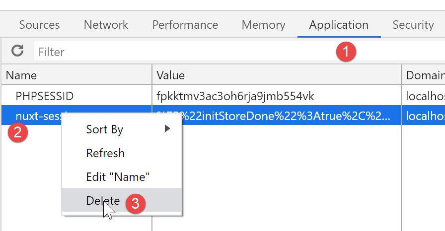

16. Ejemplo [nuxt-13]: control de la navigation de [nuxt-12]
En este ejemplo, nos centramos en la navigation de [nuxt-12]. No lo hemos hecho en [nuxt-12] porque el control de la navigation habría complicado aún más un ejemplo que ya de por sí es complejo.
Objetivo: queremos que el usuario solo pueda realizar acciones autorizadas:
- si la sesión jSON no se ha iniciado, solo se permite la sesión URL y [/];
- si la sesión jSON se ha iniciado pero el usuario no está autenticado, entonces solo se autoriza la sesión URL [/authentification];
- si la sesión jSON se ha iniciado y el usuario está autenticado, entonces solo se autorizan las sesiones URL y [/get-admindata, /fin-session];
- cuando el destino del enrutamiento actual no esté autorizado, se procederá a una redirección hacia una URL autorizada;
El ejemplo [nuxt-13] se obtiene inicialmente copiando el ejemplo [nuxt-12]:

Los cambios se realizarán en la carpeta de enrutamiento [middleware].
16.1. Enrutamiento de la aplicación [nuxt]
El enrutamiento de la aplicación se configura de la siguiente manera en el archivo [nuxt.config]:
// enrutador
router: {
// raíz de URL para la aplicación
base: '/nuxt-13/',
// middleware de enrutamiento
middleware: ['routing']
},
- línea 6: el enrutamiento de la aplicación se controla mediante el archivo [middleware/routing];
El archivo [middleware/routing] es el siguiente:
/* eslint-disable no-console */
// importamos el middleware de servidor y cliente
import serverRouting from './server/routing'
import clientRouting from './client/routing'
export default function(context) {
// ¿quién ejecuta este código?
console.log('[middleware], process.server', process.server, ', process.client=', process.client)
if (process.server) {
// enrutamiento de servidores
serverRouting(context)
} else {
// enrutamiento de clientes
clientRouting(context)
}
}
- líneas 10-16: se tratan de forma diferente las rutas del cliente y del servidor [nuxt]. Este es un punto en el que difieren considerablemente;
- línea 4: el enrutamiento del servidor se implementa mediante el script [middleware/server/routing];
- línea 5: el enrutamiento del cliente se implementa mediante el script [middleware/client/routing];
16.2. Enrutamiento del cliente [nuxt]
El enrutamiento del cliente [nuxt] sigue siendo el mismo que en [nuxt-12]:
/* eslint-disable no-console */
export default function(context) {
// ¿quién ejecuta este código?
console.log('[middleware client], process.server', process.server, ', process.client=', process.client)
// gestión de la cookie de sesión PHP en el navegador
// la cookie de sesión PHP del navegador debe ser idéntica a la de la sesión nuxt
// acion [fin-session] recibe una nueva cookie PHP (servidor como nuxt cliente)
// si el servidor lo recibe, el cliente debe pasarlo al navegador
// para sus propios intercambios con el servidor PHP
// esto es enrutamiento de clientes
// recuperar la cookie de sesión PHP
const phpSessionCookie = context.store.state.phpSessionCookie
if (phpSessionCookie) {
// si existe, la cookie de sesión PHP se asigna al navegador
document.cookie = phpSessionCookie
}
...
}
Para evitar que el cliente acceda a rutas no autorizadas, simplemente le ofreceremos en el menú del cliente de navigation únicamente las rutas autorizadas. El componente [components/navigation] queda de la siguiente manera:
<template>
<!-- menú Bootstrap con tres opciones -->
<b-nav vertical>
<b-nav-item v-if="$store.state.jsonSessionStarted && !$store.state.userAuthenticated" to="/authentification" exact exact-active-class="active">
Authentification
</b-nav-item>
<b-nav-item
v-if="$store.state.jsonSessionStarted && $store.state.userAuthenticated && !$store.state.adminData"
to="/get-admindata"
exact
exact-active-class="active"
>
Requête AdminData
</b-nav-item>
<b-nav-item v-if="$store.state.jsonSessionStarted && $store.state.userAuthenticated" to="/fin-session" exact exact-active-class="active">
Fin session impôt
</b-nav-item>
</b-nav>
</template>
- línea 4: option [Authentification] solo se ofrece si la sesión jSON se ha iniciado pero el usuario no está autenticado. Si la sesión jSON no se ha iniciado o el usuario ya está autenticado, entonces option no se ofrece;
- líneas 7-11: la sesión option [Requête AdminData] solo se ofrece si la sesión jSON se ha iniciado, el usuario está autenticado y aún no se han recuperado los datos de la sesión [AdminData]. Si no se cumple alguna de estas tres condiciones (sesión jSON no iniciada, usuario no autenticado o dato [AdminData] ya recuperado), no se ofrece el option;
- línea 15: option [Fin session impôt] se ofrece tan pronto como se haya iniciado la sesión jSON y el usuario esté autenticado; de lo contrario, no se ofrece;
16.3. Enrutamiento del servidor [nuxt]
El enrutamiento del servidor suele ser más complejo que el del cliente, ya que el usuario puede escribir cualquier URL en la barra de direcciones de su navegador. Podemos dejarlo así (al fin y al cabo, no se supone que el usuario haga eso) o intentar controlar la situación. Eso es lo que vamos a hacer aquí, a modo de ejemplo, ya que en el caso de la aplicación [nuxt-12], podemos prescindir perfectamente de ello, ya que el servidor de cálculo de impuestos está bien protegido contra estos URL introducidos manualmente y sabe enviar los mensajes de error adecuados. Lo hemos visto en [next-12], donde no había ningún control de enrutamiento.
El enrutamiento de un servidor [nuxt] es muy diferente al de un cliente [nuxt] en lo que respecta al concepto de redireccionamiento:
- cuando un servidor [nuxt] es redirigido, envía una orden de redireccionamiento al navegador del cliente con el destino de la redirección. El navegador realiza entonces una nueva solicitud al servidor [nuxt] pidiéndole el destino que se le ha transmitido. Todo ocurre como si el usuario hubiera escrito manualmente la URL del destino de la redirección: toda la aplicación se reinicia y, por lo tanto, todo su ciclo de vida (plugins del servidor, tienda, enrutamiento del servidor, páginas);
- cuando se redirige a un cliente [nuxt], no ocurre nada de eso. Se produce un simple cambio de página, el mismo que se habría obtenido si el usuario hubiera hecho clic en un enlace que llevara al destino de la redirección. El ciclo de vida es entonces diferente (enrutamiento del cliente, visualización del destino de la ruta);
Por este motivo, es preferible separar el enrutamiento del cliente del enrutamiento del servidor, aunque ambos códigos puedan parecer similares.
El script de enrutamiento del servidor [middleware/server/routing] será el siguiente:
/* eslint-disable no-console */
export default function(context) {
// ¿quién ejecuta este código?
console.log('[middleware server], process.server', process.server, ', process.client=', process.client)
// recuperamos información del almacén [nuxt]
const store = context.store
// ¿de dónde venimos?
const from = store.state.from || 'nowhere'
...
}
- en el enrutamiento del cliente, la función de enrutamiento recibe el contexto [context] con la propiedad [context.from], que es la ruta de la página de la que se viene. La ruta a la que se va se obtiene mediante [context.route];
- en el enrutamiento del servidor, la función de enrutamiento recibe el contexto [context] sin la propiedad [context.from]. El enrutamiento del servidor solo interviene cuando se solicita manualmente un URL al servidor [nuxt]. Sabemos que, en ese momento, toda la aplicación [nuxt] se reinicia. Es como si se empezara desde cero y, por lo tanto, no existe el concepto de «página anterior»;
- gracias a la sesión [nuxt] sabemos que el servidor puede recuperar esta sesión y, por lo tanto, no empezar desde cero. Por lo tanto, es en esta sesión [nuxt] y, más concretamente, en el almacén de esta sesión donde almacenaremos el nombre de la última página mostrada por el navegador del cliente antes de que se solicite una URL al servidor [nuxt];
- líneas 7-9: recuperamos el nombre de la última página mostrada por el navegador del cliente. Al iniciar la aplicación, esta información [from] no existe en el almacén. A continuación, se asigna el nombre [nowhere] a la variable [from];
Para que el servidor [nuxt] pueda recuperar en el almacén el nombre de la última página mostrada por el navegador del cliente, es necesario que el cliente [nuxt] también introduzca esta información en el almacén. Por lo tanto, el script de enrutamiento del cliente [nuxt] se completa de la siguiente manera:
/* eslint-disable no-console */
export default function(context) {
// ¿quién ejecuta este código?
console.log('[middleware client], process.server', process.server, ', process.client=', process.client)
// gestión de la cookie de sesión PHP en el navegador
// la cookie de sesión PHP del navegador debe ser idéntica a la de la sesión nuxt
// acion [fin-session] recibe una nueva cookie PHP (servidor como nuxt cliente)
// si el servidor lo recibe, el cliente debe pasarlo al navegador
// para sus propios intercambios con el servidor PHP
// esto es enrutamiento de clientes
// recuperar la cookie de sesión PHP
const phpSessionCookie = context.store.state.phpSessionCookie
if (phpSessionCookie) {
// si existe, la cookie de sesión PHP se asigna al navegador
document.cookie = phpSessionCookie
}
// ponemos el nombre de la página a la que vamos en la sesión - no hay redirección al servidor
context.store.commit('replace', { serverRedirection: false, from: context.route.name })
// guardar el almacén en la sesión [nuxt]
const session = context.app.$session()
session.value.store = context.store.state
session.save(context)
}
- se añaden las líneas 19-24;
- línea 20: se introduce en el almacén el nombre de la página [context.route.name] que se va a mostrar y que, por lo tanto, en el siguiente enrutamiento será la página de la que venimos. Por otra parte, veremos que en el enrutamiento del servidor [nuxt], este necesita saber si el enrutamiento en curso proviene de una redirección previa del servidor [nuxt]. Aquí no es el caso, por lo que establecemos la propiedad [serverRedirection] en [false];
- líneas 22-24: el estado del almacén se guarda en la sesión [nuxt] (línea 23) y, a continuación, la sesión [nuxt] se guarda en una cookie (línea 24) que, a su vez, se guardará en el navegador del cliente [nuxt];
Volvamos al script de enrutamiento del servidor [nuxt]:
/* eslint-disable no-console */
export default function(context) {
// ¿quién ejecuta este código?
console.log('[middleware server], process.server', process.server, ', process.client=', process.client)
// recuperamos información del almacén [nuxt]
const store = context.store
// ¿de dónde venimos?
const from = store.state.from || 'nowhere'
// ¿adónde vamos?
const to = context.route.name
// posible reorientación
let redirection = ''
// gestión de rutas finalizada
let done = false
// ¿Ya estamos redirigiendo el servidor [nuxt]?
if (store.state.serverRedirection) {
// nada que hacer
done = true
}
// ¿Se trata de una recarga de la página?
if (to === from) {
// nada que hacer
done = true
}
// control del navigation del servidor [nuxt]
// el cliente navigation se utiliza como base para el componente [navigation]
// si la sesión PHP no se ha iniciado
if (!done && !store.state.jsonSessionStarted && to !== 'index') {
// redirección
redirection = 'index'
// trabajo realizado
done = true
}
// cuando el usuario no está autenticado
if (!done && store.state.jsonSessionStarted && !store.state.userAuthenticated && to !== 'authentification') {
// redirección
redirection = from
// trabajo realizado
done = true
}
// donde el usuario ha sido autenticado
if (!done && store.state.jsonSessionStarted && store.state.userAuthenticated && to !== 'get-admindata' && to !== 'fin-session') {
// seguimos en la misma línea
redirection = from
// trabajo realizado
done = true
}
// caso en el que se ha obtenido [adminData]
if (!done && store.state.jsonSessionStarted && store.state.userAuthenticated && store.state.adminData && to !== 'fin-session') {
// seguimos en la misma línea
redirection = from
// trabajo realizado
done = true
}
// hemos hecho todas las comprobaciones ---------------------
// ¿Redirección?
if (redirection) {
// observe la redirección en la tienda
store.commit('replace', { serverRedirection: true })
} else {
// sin redireccionamiento
store.commit('replace', { serverRedirection: false, from: to })
}
// guardar el almacén en la sesión [nuxt]
const session = context.app.$session()
session.value.store = store.state
session.save(context)
// cualquier redirección
if (redirection) {
context.redirect({ name: redirection })
}
}
- líneas 6-9: se recupera el valor de [from] del almacén del servidor [nuxt];
- línea 11: se anota el destino del enrutamiento actual;
- línea 13: el enrutamiento puede dar lugar a una redirección del navegador del cliente. [redirection] será el destino de esta redirección;
- línea 15: [done] a [true] indica que el enrutamiento ha finalizado;
- líneas 17-21: primero se comprueba si el enrutamiento actual proviene de una solicitud de redireccionamiento enviada al navegador del cliente. Esta información se almacena en la propiedad [serverRedirection] del almacén. Si esta propiedad es verdadera, significa que el servidor [nuxt] envió una redirección al navegador del cliente durante la solicitud anterior al servidor [nuxt]. En este caso, no hay que realizar ningún enrutamiento. Durante la solicitud anterior, el enrutador del servidor [nuxt] decidió que el navegador del cliente debía ser redirigido. Esta decisión no debe ser cuestionada por un nuevo enrutamiento;
- líneas 23-27: se comprueba si el redireccionamiento en curso es una recarga de la página. Si es así, se deja que se realice;
- a partir de la línea 29, se retoman las reglas aplicadas en el componente [navigation] del cliente [nuxt] (véase el párrafo anterior);
- líneas 32-38: se trata el caso en el que la sesión jSON no se ha iniciado y el destino del enrutamiento no es la página [index]. En este caso, se redirige el navegador del cliente a la página [index];
- líneas 40-46: se trata el caso en el que la sesión jSON se ha iniciado, el usuario no está autenticado y el destino del enrutamiento actual no es la página [authentification]. En este caso, se rechaza el enrutamiento y se permanece donde se estaba;
- líneas 48-54: se trata el caso en el que se ha iniciado la sesión jSON, el usuario está autenticado y el destino del enrutamiento actual no es ni la página [get-admindata] ni la página [fin-session], que son entonces los únicos destinos posibles. En este caso, se rechaza el enrutamiento solicitado y se vuelve al punto anterior;
- líneas 56-62: se trata el caso en el que se ha obtenido [adminData]. En este caso, solo hay un destino posible para el enrutamiento: la página [fin-session]. Si no era esta la que se había solicitado, se rechaza el enrutamiento y se vuelve al punto anterior;
- líneas 64-72: si se ha producido una redirección, se anota en el almacén del servidor [nuxt]: [serverRedirection: true]. Cabe señalar que no se asigna ningún valor a la propiedad [from] del almacén. El motivo es que se va a producir una redirección del navegador del cliente y hemos visto que, en este caso, no hay enrutamiento (líneas 17-20) y la propiedad [from] del almacén no se utiliza;
- líneas 66-69: si no hay redireccionamiento, también se anota en el almacén del servidor [nuxt]: [serverRedirection: false]. Por otra parte, el enrutamiento en curso mostrará la página [to], que para la siguiente solicitud (cliente o servidor [nuxt]) se convertirá en la página anterior. Por eso se escribe [from: to];
- líneas 73-76: se guarda el almacén en la sesión [nuxt], que a su vez se guarda en una cookie;
- líneas 77-80: si [redirection] no está vacío, se solicita al navegador que se redirija. De lo contrario (no se ve aquí), el ciclo de vida del servidor [nuxt] continuará: la página [to] será procesada por el servidor [nuxt] y enviada al navegador del cliente [nuxt] con la cookie de sesión [nuxt];
El enrutamiento elegido aquí para el servidor [nuxt] es arbitrario. Se podría haber elegido otro o, como se ha dicho, no haberlo hecho en absoluto. El elegido anteriormente tiene la ventaja de mantener siempre la aplicación en un estado estable, independientemente de la URL solicitada por el usuario.
Se puede mejorar un punto cuando la página que se carga finalmente es la página original. Hay dos casos:
- el usuario ha provocado una recarga de la página (to===from);
- hay redireccionamientos a la página original (redireccionamiento===from);
En ambos casos, la página original se volverá a ejecutar con su llamada asíncrona al servidor de cálculo de impuestos. Veamos un ejemplo. Si, una vez autenticado, el usuario recarga la página (F5). En este caso, en el enrutamiento anterior, tenemos: [to]=[from]=[authentification]. No hay redireccionamiento. La página [to=authentification] será ejecutada por el servidor [nuxt]. Si no hacemos nada, la función [asyncData] se ejecutará de nuevo. Esto es innecesario, ya que la autenticación ya se ha realizado.
Podemos mejorar esto modificando ligeramente la página [authentification]:
// datos asíncronos
async asyncData(context) {
// registro
console.log('[authentification asyncData started]')
// no hacemos las cosas dos veces si la página ya ha sido solicitada
if (process.server && context.store.state.userAuthenticated) {
console.log('[authentification asyncData canceled]')
return { result: '[succès]' }
}
// cliente [nuxt]
if (process.client) {
// empezar a esperar
context.app.$eventBus().$emit('loading', true)
// ningún error
context.app.$eventBus().$emit('errorLoading', false)
}
try {
// autenticarse en el servidor
...
- líneas 6-9: si la página es ejecutada por el servidor [nuxt] y se detecta en el almacén que la autenticación ya se ha realizado, entonces se devuelve directamente el resultado deseado (línea 8);
Se hace lo mismo para todas las páginas:
Página [index]:
// datos asíncronos
async asyncData(context) {
// registro
console.log('[index asyncData started]')
// no hacemos las cosas dos veces si la página ya ha sido solicitada
if (process.server && context.store.state.jsonSessionStarted) {
console.log('[index asyncData canceled]')
return { result: '[succès]' }
}
try {
...
Página [get-admindata]
// datos asíncronos
async asyncData(context) {
// registro
console.log('[get-admindata asyncData started]')
// no hacemos las cosas dos veces si la página ya ha sido solicitada
if (process.server && context.store.state.adminData) {
console.log('[get-admindata asyncData canceled]')
return { result: context.store.state.adminData }
}
// cliente
if (process.client) {
// empezar a esperar
context.app.$eventBus().$emit('loading', true)
// ningún error
context.app.$eventBus().$emit('errorLoading', false)
}
try {
...
Página [fin-session]
// datos asíncronos
async asyncData(context) {
// registro
console.log('[fin-session asyncData started]')
// no hacemos las cosas dos veces si la página ya ha sido solicitada
if (process.server && context.store.state.jsonSessionStarted && !context.store.state.userAuthenticated) {
console.log('[fin-session asyncData canceled]')
return { result: "[succès]. La session jSON reste initialisée mais vous n'êtes plus authentifié(e)." }
}
// caso de cliente [nuxt]
if (process.client) {
// empezar a esperar
context.app.$eventBus().$emit('loading', true)
// ningún error
context.app.$eventBus().$emit('errorLoading', false)
}
try {
16.4. Ejecución
Para ejecutar este ejemplo, antes de la ejecución hay que asegurarse de eliminar la cookie de sesión [nuxt] y la cookie PHP del navegador que ejecuta el cliente [nuxt], con el fin de partir de una situación limpia. A continuación se muestra un ejemplo con el navegador Chrome:

16.5. Conclusión
El enrutamiento del servidor [nuxt] es complejo, ya que hay que prever todas las URL que el usuario pueda escribir manualmente. Es un caso de libro. Una aplicación [nuxt] no está pensada para usarse de esta manera. Una vez que el enrutador del servidor [nuxt] ha servido la página [index], se podrían redirigir las siguientes llamadas realizadas al servidor a una página de error.
En el caso concreto de nuestro ejemplo [nuxt-13], el enrutamiento del servidor [nuxt] era innecesario. El enrutamiento por defecto (en realidad, ausencia de enrutamiento) del ejemplo [nuxt-12] era más que suficiente.